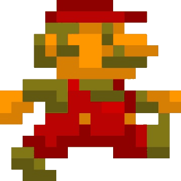

0
Tudo sobre esse Portfólio - Luigi Giampaoli
Ola indivíduo que está observando esse site, meu nome, como mostrado, é Luigi Giampaoli, e busco fazer esse site com o objetivo de mostrar minhas habilidades de programação web e, consequentemente, informaões sobre mim, desde: formações acadêmicas, idiomas, experiência profissional; além de possibilitar para download meu portfólio, podendo escolher entre português e inglês e se quiser fazer contatos comigo, há o botão de 'Contatos' para podermos trocar assuntos e ideias. Portanto, vou mostrar alguns detalhes que fiz nesse site que pode achar interessante e que demonstram-me como um bom programador:
Meu Icone:
Se clicar no meu ícone, ele vai fazer alguma coisa dependendo do mapa que tiver. Por exemplo, você começa no mapa de "Super Mario Bros"(Role para baixo para poder ver a primeira fase do Mario), portanto se clicar no meu ícone, irá receber uma quantidade de pontos até receber o "1 UP"
Troca de Imagens:
Ao clicar o botão do personagem (Canto Superior Direito), o fundo do site e dos botões irão trocar por outras imagens ou cores, fazendo com que, consequentemente, a função do 'Meu ícone' mude também;
Um resumo rapido sobre os botões acima
Legenda:
◙:Básico;
◙◙:Mais que o Básico;
◙◙◙:Intermediário;
◙◙◙◙:Mais que o Intermediário;
◙◙◙◙◙:Profissional/Fluente